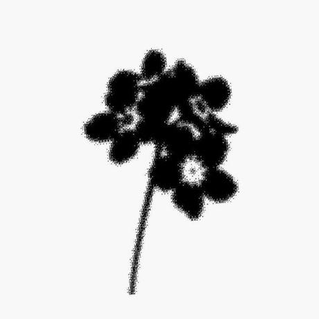
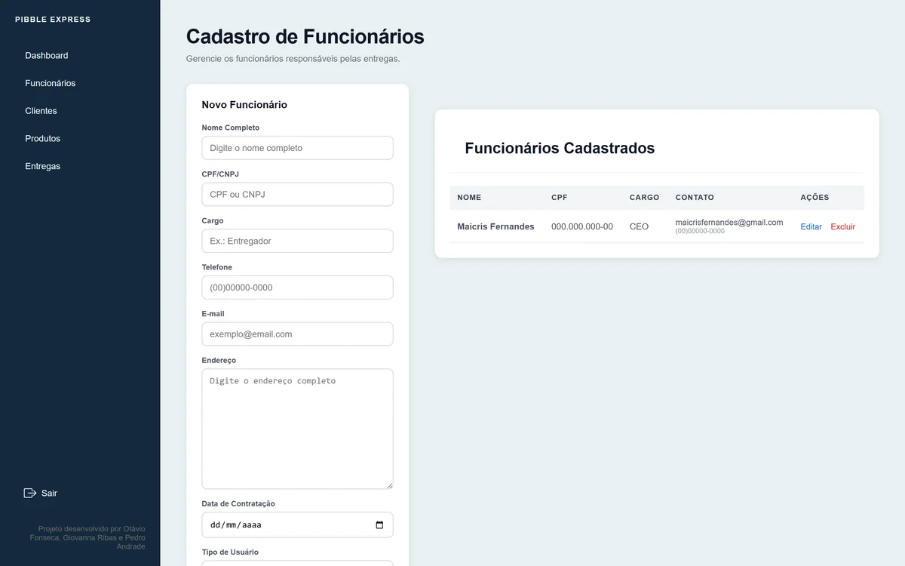

Software Engineering Student
PUCPR — foundations, systems, practice
Portfolio — built by hand

01 Current roles
PUCPR — foundations, systems, practice
production software, day to day
identity, illustration, image, photography
founder & lead
02 Selected work
Software, data, a game, a community. Different languages for the same habit — making things.
03 Featured technical case

DATASUS → Selenium → pandas → processed data → Streamlit
Hemotherapy figures for the state of Paraná live in the DATASUS TabNet — a slow public interface, one query and one export at a time.
A robot (Selenium) that runs the queries and reads the result tables, a pandas layer that cleans and consolidates every period, and a Streamlit dashboard to compare volume across months and years. Final project for a Python course, with two teammates.
I proposed using the blood-bank data and worked on the extraction and treatment modules. Teammates: Jackson Beggi and wingCODING (RPA orchestration and dashboard).
PythonSeleniumpandasRPAStreamlit
04 Game — individual project
A 2D endless-runner: a student is late for class and has to dodge the city. Reach 1000 points to pass; lose three lives and it's over.
Written in Python and Pygame — a clean state machine (menu / play / end), jump physics with gravity, random obstacles, difficulty that ramps with the score, lives with temporary invincibility, a HUD and a saved high score.
The code is my own work. The visual assets are AI-generated and shown transparently.
PythonPygamestate machine
05 Web — team project

A Django delivery-management system: authentication, ADM/FUNC access levels, CRUD for clients, products, employees and deliveries, a REST API and an integrated frontend. Built with two teammates.
DjangoDRFauthenticationCRUD
06 Coffee & Code
A university tech club I started and actively build, with the team.
It exists to give students a lower-barrier, hands-on place to learn, build projects together and share what they know — outside the pressure of a graded room.
I lead it where design and technology meet: the visual identity, the materials, how sessions are run, and how people are brought in.
07 Creative work
Graphic design, image manipulation, digital illustration, photography and visual experiments. A selection — images are being prepared.
08 Community & social impact
Building with people — collaboration, volunteering, communication and events.
Events Coordinator: organizing events and communication, and initiatives around inclusion and social impact.
Social media: communication and outreach for the project's actions.
Environmental actions, activities with children and other volunteer work.
Photos are selected with care — no children's faces in sensitive contexts, no legible badges or personal data.
09 Currently
Working on the development and maintenance of production software across frontend, backend, APIs and databases — implementing features, investigating bugs and integrating layers of existing systems.
Due to the proprietary nature of the systems I work on, source code and internal materials are not publicly available.
Software Engineering @ PUCPR
10 Beyond the screen
Things I like making away from a keyboard — mostly baking, some photography.
11 Contact
Open to build things with good people.
Full image and a short note about this piece are being added.